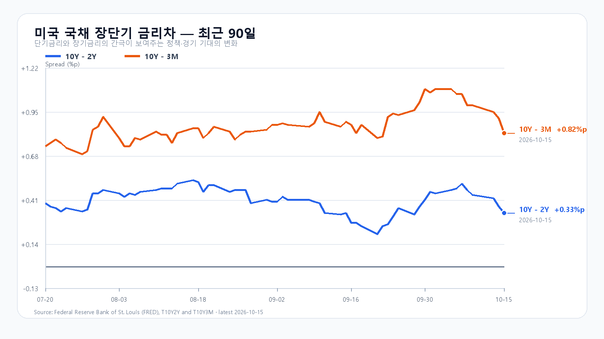
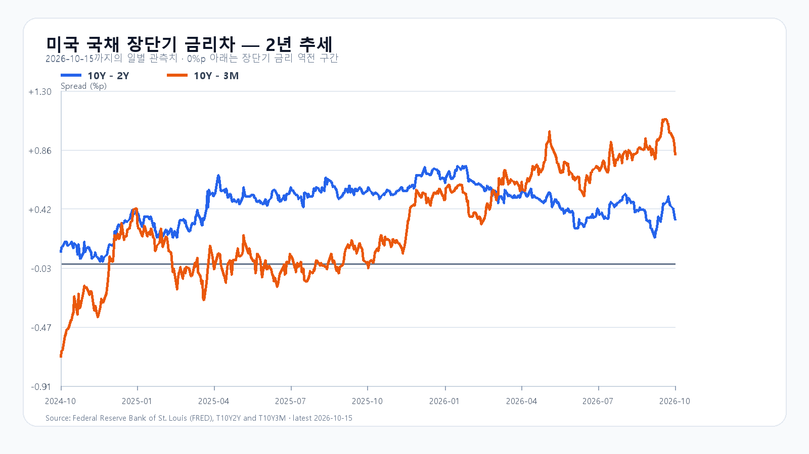

미국 증시가 반등했어도 반도체 매도는 끝나지 않았다. 밤사이 SOXX는 0.91%, SMH는 1.04% 내렸고 Nvidia와 AMD도 하락했다. 반면 Micron은 1.87% 올랐다. 전일 7.57% 급락한 KOSPI가 오늘 반등을 이어가려면 미국 지수의 방향보다 삼성전자·SK하이닉스의 가격 회복과 국내 매수세가 필요하다.
TSMC의 주문은 늘고, 투자 자금은 비싸졌다
TSMC는 3분기 매출 467억2천만달러를 기록했고, 4분기 매출을 523억~543억달러로 예상했다. 첨단공정 수요가 이어진다는 회사 전망이다. AI 반도체 주문이 갑자기 사라졌다는 해석과는 거리가 있다. TSMC 공식 실적은 전일 한국장 마감 30분 전에 발표됐다.
주문이 늘어도 그 설비를 지을 돈이 비싸지면 주가는 다른 방향으로 움직일 수 있다. Reuters에 따르면 CoreWeave 주식은 장중 낙폭을 되돌렸지만 회사채 금리는 약 15%에 머물렀다. 데이터센터 수요와 투자비 회수에 대한 시장의 평가가 갈라진 것이다. 이 부담은 GPU뿐 아니라 서버와 메모리를 사는 고객의 투자 속도에도 영향을 준다. Reuters 보도에 따른다.
한국장 마감 뒤 나온 생산자물가
미국 9월 PPI는 전월 대비 1.3%, 전년 대비 6.3% 상승했다. 식품·에너지·무역서비스를 제외한 지수도 전월 대비 0.5% 올랐다. 전일 21:30 KST에 나온 이 발표는 오늘 한국장이 새로 소화할 재료다. 물가 부담이 커지면 금리 인하에 기대는 반등과 차입이 많은 AI 인프라 기업 모두에 제약이 생긴다. 미 노동통계국 발표 기준이다.
그렇다고 미국 반도체의 하락률을 전일 국내 급락에 그대로 더할 수는 없다. 한국장은 이미 CPI와 AI 자금조달 우려로 크게 밀렸다. 오늘은 새 물가 발표 이후 환율과 선물이 어느 쪽으로 움직이는지, 메모리주 반등에 실제 매수세가 붙는지를 구분해 봐야 한다.
메모리 가격과 주식 수급은 갈라져 있다
10월 15일 DRAM 현물시장에서 DDR5 16Gb 평균은 60.433달러로 0.55%, DDR4 16Gb는 83.66달러로 0.06% 올랐다. 일부 현물가격과 Micron의 반등은 실물 수요가 한꺼번에 무너졌다는 주장에 반대 근거가 된다. 이 가격이 HBM·NAND의 계약가격이나 국내 주식의 매도 물량까지 설명하지는 않는다. TrendForce의 18:10 GMT+8 가격이다.
5,450선 방어와 5,650선 회복
전일 KOSPI는 5,554.22로 마감했다. 장중 저점은 5,450.81, 고점은 5,751.45였다. 오늘 기본 종가 범위는 5,450~5,650으로 가능성을 45%로 둔다. 5,650 초과~5,800의 강세 가능성은 25%, 5,200~5,450 미만의 약세 가능성은 30%다. 이는 조건부 분석이며 실제 종가는 범위를 벗어날 수 있다.
5,650 위에서 외국인과 프로그램이 함께 순매수하면 강세 판단에 힘이 실린다. 5,450 아래에서 두 수급이 동반 매도하면 약세 흐름으로 본다. 기본 구간도 외국인 매도가 8천억원을 넘겨 커지면 신뢰를 낮춰야 한다. 초반 반등만으로 종일 수급이 회복됐다고 보기는 이르다.
KODEX 레버리지의 기준은 전일 저가 64,920원, 종가 67,785원, 고가 73,800원이다. 각각 1차 지지, 반등 기준, 저항으로 본다. 64,920원을 이탈한 뒤 회복하지 못하면 전일 저점에 기대는 판단은 무효다. 오늘 밤 21:30 KST에는 미국 수출입물가가 발표된다. BLS 일정에 따른다.
장전 시세
| 항목 | 최근값 | 원천 시각 |
| 삼성전자 NXT (OPEN) | 218,500원 · 4.05% | 2026-10-16T08:10:34.820407+09:00 |
| SK하이닉스 NXT (OPEN) | 1,312,000원 · 3.96% | 2026-10-16T08:10:34.82042+09:00 |
| 하나은행 USD/KRW 고시 | 1,342.50원 | 2026-10-16T07:35:02+09:00 |
| NQF 최근 거래 | 30,062.25 | 2026-10-16T08:00:33+09:00 |
| ESF 최근 거래 | 7,786.50 | 2026-10-16T08:00:32+09:00 |
| CLF 최근 거래 | 96.18 | 2026-10-16T08:00:20+09:00 |
| BZF 최근 거래 | 105.70 | 2026-10-16T07:55:51+09:00 |
미국 시간외 최근 거래
| 종목 | USD | 종가 대비 | 원천 시각 |
| NVDA | 217.34 | +0.05% | 2026-10-16T08:00:50+09:00 |
| AMD | 557.00 | -0.93% | 2026-10-16T08:01:43+09:00 |
| MU | 925.27 | -0.64% | 2026-10-16T08:02:09+09:00 |
| AVGO | 343.30 | -0.30% | 2026-10-16T07:59:27+09:00 |
미국 정규장
| 종목 | 종가 USD | 등락 |
| QQQ | 728.00 | -0.13% |
| TQQQ | 73.82 | -0.40% |
| SOXX | 514.71 | -0.91% |
| SMH | 558.84 | -1.04% |
| NVDA | 217.23 | -1.84% |
| AMD | 562.23 | -1.50% |
| MU | 931.24 | +1.87% |
| AVGO | 344.33 | -0.55% |


TSMC 공식 실적 · 미국 PPI · AI 금융비용 Reuters · 미국 가격 · 국내 일봉 · 메모리 현물 · 경제 일정 · FRED 금리차